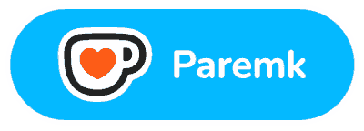

Periodinis žurnalas
apie augalinę mitybą
„Valgyk Daugiau Daržovių“
Kas viduje?
- Sezoniniai receptai
- Pokalbiai su įkvepiančiais žmonėmis apie jų augalinę mitybą
- Naudingi patarimai maisto ruošimui
- Specialūs pasiūlymai
- Veganiškų naujienų apžvalga
- Išskirtinis turinys tik žurnalo skaitytojams
Paremk mūsų veiklą norima suma ir parsisiųsk.

ir atsisiųsk